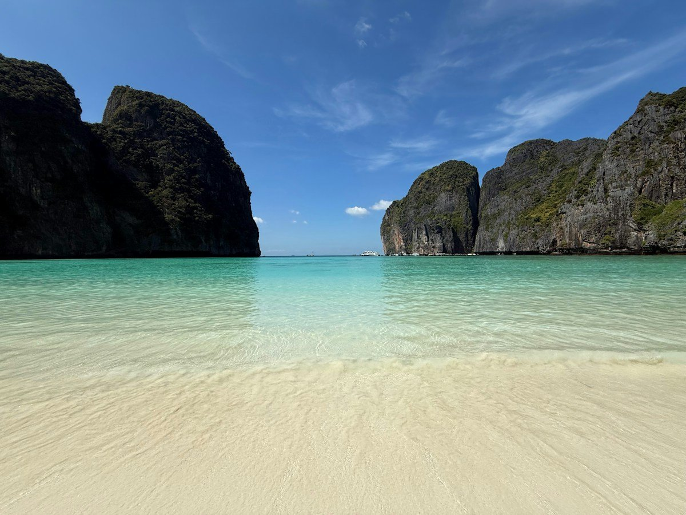

Пляж + прогулки
Пляж + прогулки ИЗ ПЕТЕРБУРГА — К НОВЫМ ВПЕЧАТЛЕНИЯМПусть в планах
Пусть в планах
будет море.
Семьёй, вдвоём или на несколько дней.
Начните с отдыха, который подходит именно вам.
Олюдениз, Турция
ПЛАН НА ОТПУСКБольше моря.
Меньше суеты.ПЕТЕРБУРГ ↗ ВАШ ОТДЫХ
Меньше суеты.ПЕТЕРБУРГ ↗ ВАШ ОТДЫХ
01 Пожелания — в основе поездки02 Понятные параметры выбора03 Отзывы с источниками
ВЫБИРАЙТЕ СВОЙ РИТМ
Все направления Куда хочется сейчас?


НЕ ПОДСТРАИВАЙТЕСЬ ПОД ЧУЖОЙ ОТПУСКТри формата.
Три формата.
Ваши собственные детали.
Выберите отправную точку — пожелания можно изменить в конструкторе.
01 / С ДЕТЬМИ
Хорошо всей семье.
Возраст детей, удобный номер, питание и комфортная дорога.
Собрать семейный план ↗ 02 / ВДВОЁМВремя друг для друга.
Тишина у моря, прогулки или новые впечатления — в вашем ритме.
Спланировать отдых вдвоём ↗ 03 / НА НЕСКОЛЬКО ДНЕЙНебольшая перезагрузка.
Меньше остановок, понятная дорога и место для спонтанных планов.
Подготовить короткую поездку ↗ДЛЯ ТЕХ, КТО ЕДЕТ ВМЕСТЕОтдых, где
Отдых, где
хорошо всем.
Одним нужен пляж рядом с отелем, другим — новые места каждый день. Хороший план учитывает и то, и другое.
- Для семей — возраст детей, питание и размещение.
- Для пар — свой темп, прогулки и время вдвоём.
- Для коротких поездок — удобная дорога и насыщенный маршрут.

У КАЖДОГО СВОЁ ИДЕАЛЬНОЕ «НИЧЕГО НЕ ДЕЛАТЬ»
ОТ ИДЕИ К ПОНЯТНОМУ ПЛАНУ
Сначала — ваши желания.
Три простых шага перед разговором с менеджером.
- 01
Выберите настроение
Море, экскурсии или природа. Отметьте, что важно именно для этой поездки.
- 02
Добавьте детали
Даты, состав туристов, бюджет и пожелания к размещению — всё в одном месте.
- 03
Сохраните план
Получите готовый текст и используйте его при обращении в агентство.
ОПЫТ ПУТЕШЕСТВЕННИКОВВажны детали.
Подробнее об отзывах Важны детали.
И люди, которые их замечают.
«Ирина подобрала нам самый хороший вариант».
Короткий фрагмент опубликованного отзыва.
Открыть отзывы в источникеПоддержка при выборе и организации отдыха.
В отзыве описаны две поездки — в Турцию и Сочи — и отмечены впечатления от отдыха.
Краткое изложение отзыва, не прямая цитата.
Прочитать отзывы на Яндекс КартахПЕРЕД ПОЕЗДКОЙХорошие вопросы.
Хорошие вопросы.
Понятные ответы.
Чтобы первое обращение было проще.
Я ещё не выбрал страну. С чего начать?
Начните с формата отдыха: море, прогулки по городу или природа. Затем укажите состав поездки, желаемые даты и бюджет. В конструкторе можно выбрать «Пока не определился».
Какой бюджет указывать?
Сумму на одного человека за всю поездку. Отдельно отметьте, нужен ли перелёт, трансфер и питание. Итоговую стоимость и состав услуг необходимо уточнять у агентства на выбранные даты.
Что важно для отдыха с детьми?
Возраст детей, размещение, питание, вход в море и продолжительность дороги. Эти пожелания можно включить в план, чтобы обсудить их вместе, а не возвращаться к каждому вопросу отдельно.
Можно ли совместить пляж и экскурсии?
Да, эти пожелания можно указать одновременно. Для комфортного плана полезно определить, сколько дней хочется отдыхать у моря, а сколько — проводить в поездках и на прогулках.
Форма на этом сайте бронирует тур?
Нет. Конструктор собирает пожелания только в вашем браузере. Он не отправляет заявку и не бронирует услуги. Готовый текст можно скачать и использовать при обращении на официальный сайт агентства.
СЛЕДУЮЩАЯ ОСТАНОВКА — ВАШ ОТПУСКХорошая поездка
Хорошая поездка
начинается с ваших желаний.
Выберите формат, даты и комфортный бюджет.
Сохраните понятный план для разговора с менеджером.